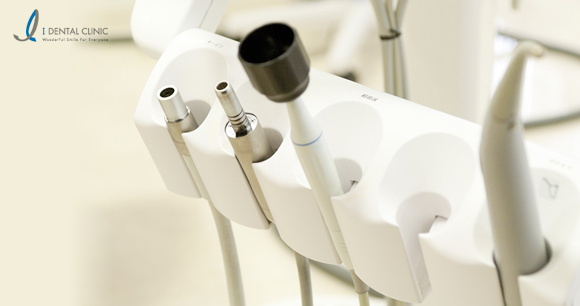
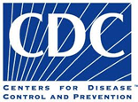
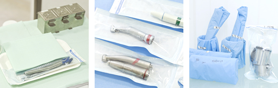
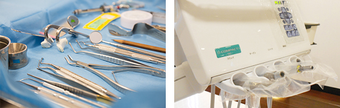

インプラントならアイデンタルクリニック トップページ > 設備と体制
2分ほどの動画です。ぜひご覧下さい。
これがインプラント手術に重要な、土台となる骨の断面図です。骨の形状や神経があるのがわかります。
当院では、歯科専用ＣＴ（コンピューター活断撮影器）を完備しております。
歯を支える顎の骨は窪みや傾きがあり、神経や血管が多く通っています。その流れは複雑で、パノラマ写真（レントゲン写真）では、骨の影になった神経や血管を確認できません。複雑な神経系や血脈な流れ、筋肉や骨の構造をより良く把握するために、ＣＴは欠くことのできない設備です。
インプラント歯科医にとって、ＣＴは言わばナビゲーションです。ＣＴを使えば、死角ゼロの手術が可能です。
ＣＴで患者様の歯や顎の状態を３Ｄ画像で撮り、歯の状態について手術前後でご説明を致します。
土台となる骨は、人それぞれ違います。骨の薄いところ、厚いところもあり骨の構造は人によって様々です。CTならばそれらを把握し、正確に穴を空け、安全にインプラントを入れられます。逆にパノラマ写真の正面確認のみで骨の窪みや傾きに気づかず、神経までの距離だけを見て穴を空けてしまうと、上記右図のように、骨を突き抜けて血管や神経を傷つけるといったことが起こってしまうのです。
多くの医院では、このような「骨の厚みがわからないパノラマ像」と「少ない症例数による勘」を頼りに、「大体これくらいは行けるだろう」と、適当に骨に穴を空けていきます。もし、これで骨を突き抜けてしまったら、その先の血管や神経を巻き込んでしまいます。実際にそのような事故は起こっているのです。

当クリニックでは、National Center for Chronic Disease Prevention and Health Promotion,CDC（米国疾病管理予防センター、国立慢性病予防・健康増進センター口腔衛生部）監修の「歯科臨床における院内感染予防ガイドライン-2003年」に準拠した感染予防対策処置を常時に行っております。 |
 |

1.着衣、手袋などはすべて使い捨て製品を使用しています。
2.全ての手術器具は個別に滅菌されております。

インプラント手術には「経験豊富な麻酔医の立会い」「厳密な生体のモニタリング」が必要不可欠です。しかし、これらの体制が整っていない歯科医院も少なくありません。
インプラント手術を受けられる方は、自覚のある無しに関わらず、何らかの全身疾患を合併されていることが多いものです。
同時に、インプラント手術は精神的な緊張を伴うことが多く、心臓や脳に負担がかかりやすい状態にあります。
つまり、「いかに患者様の緊張を和らげるか？」「手術中の患者様の全身状態を正確に把握するか？」が極めて重要です。
当院では全身麻酔１万症例以上の麻酔医が常駐し、生体モニターをつうじて患者さまの「手術中の安全」を守っております。
当院では『セデーション(静脈内鎮静法)』という、うたたねしているような気分で手術をお受け頂くことができる手技を用意しております。
実際に『セデーション』を実施された患者さまからは「気が付いたら手術が終わっていた」「やってよかった」と大変にご好評をいただいております。
スタッフ全員がインプラント専門医院のプロであるために、
AHA BLS HealthCare Providerコースを修了しています。
BLSとは、一次救命処置の略称です。
AEDを設置しているインプラント医院は非常に少なく、
またAEDを設置していても、使えなければ
全く意味がありません。
当院では、全スタッフが実践に基づいたトレーニングを
受け、一次救命処置（心肺蘇生法、窒息時の対応法、
気道の確保、AEDの使用方法）のプロとして患者様の
安全を守ります。
インプラントは外科手術ですので、
一定のリスクを伴います。
その中で、人命に係るような致命的な合併症や
偶発症の事故というのは、非常に稀です。
しかし、どのような手術においても、
その可能性がゼロという事はありません。
大切な事は、事故を未然に防ぐ事で、
そのリスクを出来る限り回避しなければ、
大きな事故に繋がってしまいます。
当院では、安全性向上の取り組みの一環として、問診を行った後、
合併症を引き起こす可能性がある場合は、事前に大学病院や総合病院などの
専門の医療機関をご紹介し、連携体制を取ってから手術にあたります。
たとえどんな素晴らしい設備を整えたとしても、それを使いこなせなければ意味がありません。当医院にはそれらを使いこなせる専門医がいるので安心です！
手術中の患者様の血圧は、通常１２０の血圧の方でも１６０近くまで上昇します。歯の手術とは言え、患者様の心身に掛かる負担は大きなものになります。血圧・心電図・酸素飽和度モニターは、インプラント手術と言えども、要になる機器です。
当院では全身麻酔症例数１万件以上、全身管理と痛みの緩和のプロフェッショナルの専門麻酔医が、これらの機器を逐一モニターし、ストレスの緩和に努めます。患者様は「静脈鎮静法」という麻酔方法により、眠りに誘われるようなうたた寝の感覚で、手術に臨んで頂けます。
リラックスした状態でも、専門の機器と専門の医師が、身体の状態を１００％監視しています。